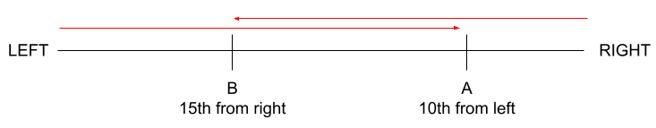
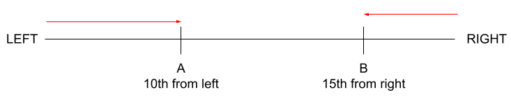

Order and Ranking
Order refers to the arrangement of a set of objects or individuals in a particular sequence based on a given criterion, such as size, importance, or time. It involves placing the items in a linear sequence from first to last, smallest to largest, or in any other specific order.
Ranking, on the other hand, refers to the assignment of a unique position or number to each item in a set, based on its relative position compared to the others. For instance, ranking can be used to assign places in a race or to determine the top performers in a competition, based on their scores or achievements.
In simpler terms, order refers to the arrangement of things in a sequence, while ranking involves assigning a specific position or number to each item based on its relative position in the sequence.
Key Points
Meaning of "Precedes", "Ahead of" and "Before"
In a class of 50 students, Sahil is ranked 16.- If Amit precedes Sahil, it means Amit's rank can be from 1 to 15.
- If Amit is ahead of Sahil, it means Amit's rank can be from 1 to 15.
- If Amit is ranked before Sahil, it means Amit's rank can be from 1 to 15.
Meaning of "Follows", "Behind" and "After"
In a class of 50 students, Sahil is ranked 16.- If Amit follows Sahil, it means Amit's rank can be from 17 to 50.
- If Amit is behind Sahil, it means Amit's rank can be from 17 to 50.
- If Amit is ranked after Sahil, it means Amit's rank can be from 17 to 50.
Meaning of "Immediately"
In a class of 50 students, Sahil is ranked 16.- If Amit is immediately followed by Sahil, it means Amit's rank is 15.
- If Amit is immediately ranked after Sahil, it means Amit's rank is 17.
-
Meaning of "Away"
In a class of 50 students, Sahil is ranked 16.- If Amit is 7 places away from Sahil, it means Amit's rank is either 16-7 = 9 or 16+7 = 23.
-
Meaning of "Between"
In a class of 50 students, Sahil is ranked 16.- If there are 7 students between Amit and Sahil, it means Amit's rank is either 16-7-1 = 8 or 16+7+1 = 24.
Note: Sahil's rank is 16, there are 7 students between Amit and Sahil and then Amit is ranked.
- If there are 7 students between Amit and Sahil, it means Amit's rank is either 16-7-1 = 8 or 16+7+1 = 24.
Important Concepts
Concept 1: Total Number of Objects or People in a Group
Imagine you have a group of people or objects. To find out how many there are, you can use this formula:
- Add together the position of the same person or object from both ends of the group (for example, from the right and left or top and bottom).
- Then, subtract 1 from the total.
Example:
In a class of 52 students, 25 but all failed. If Neha was 10th from the last among those who passed, what was Neha's rank in the class?
Solution
Example:
First 100 natural numbers are written in ascending order from left to right. Which number will be placed 5th to the right of the 12th number to the left of 40th number from the right end?
Solution
Example:
In a row, Pooja was 12th from the left and Neha was 20th from the right. If they interchanged their positions, Pooja will be 22nd from the left.
- What was the total number of people in that row?
- What was Neha's final position from the right
- How many people were between Pooja and Neha initially?
Example:
In a class, Ritu was 20th from the top and Ashima was 25th from the bottom. If Ashima preceeds Ritu with 8 students between them, what is the strength of the class?
Solution
Example:
In a class of 45 students, for every three boys, there were 2 girls. Sumit was 12th from the last among the boys and was preceeded by 6 girls. What was Sumit's rank in the class?
Solution
Example:
In a class of 40 students, Abhay is followed by 8 girls. If he is 12th from the top among the boys and 6th from the bottom among the boys. How many girls preceed Abhay?
Solution
Concept 2: Ranks From Either Ends
If we know A's rank from the left end while B's from the right end, two cases can arise:
- Overlapping Case: A is standing on the right of B
 - Non Overlapping Case: A is standing on the left of B

Example:
In a row, Puneet was 15th from the left, Neeraj was between Puneeet and Pooja. If Pooja was 15th from the right, how many people were there in that row?
Solution
Ordering
The terms "who", "which", "whom" and "whose" point to the noun preceding them while the terms "and" and "but" point to the subject of the sentence.
For example,
Example:
Six friends A, B, C, D, E and F were compared on the basis of their weights.
- C, who was heavier than A was heavier than F but was not the heaviest of all.
- D was lighter than B but was not lighest of all.
- F who was lighter than E was heavier than B.
Solution
Example:
Six movies were to be schedules in a film festival strting on Friday and ending on Thursday
- One day is a holiday which is either Sunday or Monday
- B should be scheduled three days after A
- The festival can not start with E and F
- C must immediately follow the holiday and should not be scheduled before F.
Solution